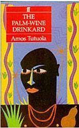
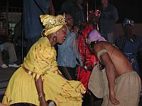

Imagina, si te es posible, a un bebé por la mitad que sale de las cenizas de una casa quemada, se monta en la cabeza de una esposa y, mientras ella camina, silba como si cuarenta personas lo hicieran al unísono. Imagina.
El esposo que cuenta esta extravagante historia tampoco es lo que llamaríamos “normal”, es un bebedor de vino-de-palma de profesión y está harto de que este medio bebé se les coma todo el alimento que compran y los mantenga despiertos día y noche. Aparentemente, no hay forma de deshacerse de él, algo fácil de dudar ya que nuestro protagonista bebedor visita la casa de la Muerte con regularidad y sale vivo.

La narrativa de Amos Tutuola es eficazmente representativa de la esencia que mueve la religiosidad africana y cualquier antillano que se tope con uno de sus libros sentirá el vínculo que lo une con el continente que escupió al Homo sapiens, desde donde salimos, nos empujaron y raptaron.
Todos esos conocidos Orishas: Changó, Oyá, Ogún, Obatalá, están representados en creencias que sobreviven con el canto, la música, la pintura, la escultura, el baile, el pantomimo, el teatro y el relato, una dimensionalidad múltiple, alegre, frívola, que habla de los deseos de la carne, de la simpleza de la vida y también de su inacabable dolor.
El dinamismo de estos ritos africanos, el ardor y sus palpitantes sonidos fueron plasmados aquí en la isla por aquellos que llegaron a reemplazar el martirio indígena. Pero la dinámica religión fue arrinconada y perdió su brillo primordial bajo el dominio cristiano que la rechaza y la vincula con el demonio, otorgándole una personalidad que nunca tuvo y que Tutuola, y otros autores como él, restaura sin proponérselo.

Los dominicanos somos hijos de esas creencias, también somos hijos del cristianismo. La mayoría de los hogares de este lado de la isla tiene un pasado originado de ese sincretismo, de las transgresiones que todos hacían del catolicismo a la brujería, un paso que dice bastante sobre nuestras raíces. Lo negro, el vudú, los santos, el tambor, los espíritus, la sangre africana, son elementos innegables en la personalidad dominicana, los adjetivos negativos son otorgados, como siempre, por el usuario que muchas veces grita su desdén desde la perspectiva de la oposición y la negación.
Para disfrutar de estas narrativas con el candor apropiado, hay que despojar a las religiones del subjetivismo que las clasifica en un orden absurdo que dicta cuáles deben ser respetadas y cuáles no. Analizarlas objetivamente, sin otorgar poderes divinos a ninguna, ofrece una visión fresca de todas ellas.
La oración a Changó es un rito endemoniado ante los ojos del cristiano que no puede disfrutar del relato sin sentir que algo anda mal, que su Dios a lo mejor lo castigue por tal indiscreción. Aún así, incontables cristianos practican distintos tipos de ceremonias africanas y, quiéranlo o no, todos le otorgan poderes a estas ideas, ya sea para adorarlas o temerlas. Pero si te asomas y las observas bajo la lupa del no creyente, la experiencia es realmente enriquecedora.
Robert Farris Thompson, uno de los africanistas más inspirados, escribió una vez que “un niño que se críe alrededor de la religión Yoruba está expuesto diariamente a una de las más finas tradiciones de esculturas jamás producidas por un pueblo”. Otros piensan que son creencias más creativas, inspiradoras, originales, menos propensas a las repeticiones y con un sinnúmero de historias que promueven las artes en todos sus dominios. Son también más alegres, repletas de un sentido de incredulidad muy particular, que aunque sea algo inevitable en todas las religiones, en los ritos Yoruba es llevado al máximo, a la cima…donde arribas a ritmo de tambor.
Sin embargo, hasta entre creencias existe clasismo. Las iglesias cristianas catalogan a los credos africanos como aliados del mal sólo porque no son iguales a ellas, diferencias que pueden medirse en grados, cantidades de supersticiones, dioses y espíritus. Pero sabemos bien que los adoradores del mal hacen mal desde cualquier creencia o no creencia. El mal, así como el bien, es un conjunto de actos humanos. Otorgarle este odioso título a los seguidores de espíritus africanos sólo empeora la reputación de las religiones y nos aleja más de nuestras raíces.
Hemos sido una ‘isla estación’. Desde que se agotaron los taínos, por aquí han pasado muchos pueblos dejando sus semillas y si aprendemos de sus legados a lo mejor logramos respetarlos e integrarlos a nuestra personalidad en su calidad positiva, de enriquecimiento y multiculturalismo, (que, por cierto, sigue de moda). Creo que son acciones que nos ayudarán a crecer como pueblo, también a amarnos y aceptarnos tal y como somos. Las mezclas son buenas, pero hay que evolucionar de ellas…
Además, el estudio de las religiones es esencial para comprender la personalidad de cualquier sociedad y si de algo sirve el desarrollo de estos ritos es para mostrarnos lo creativos que podemos ser y la fortaleza que tiene el deseo en el ser humano de trascender la vida. Un deseo que lo impulsa a descubrir que de la única forma de deshacerte de medio bebé en la cabeza de tu esposa es abandonándolo en el pueblo de Tambor, Canción y Baile; de hecho, fue una tarea fácil para la esposa y el esposo dejarlo allí, lo dificultoso fue, nos dice Tutuola, marcharse ellos después…¡Imagina!
Volver a la sección Examinando las religiones
Comentarios
Comments powered by Disqus